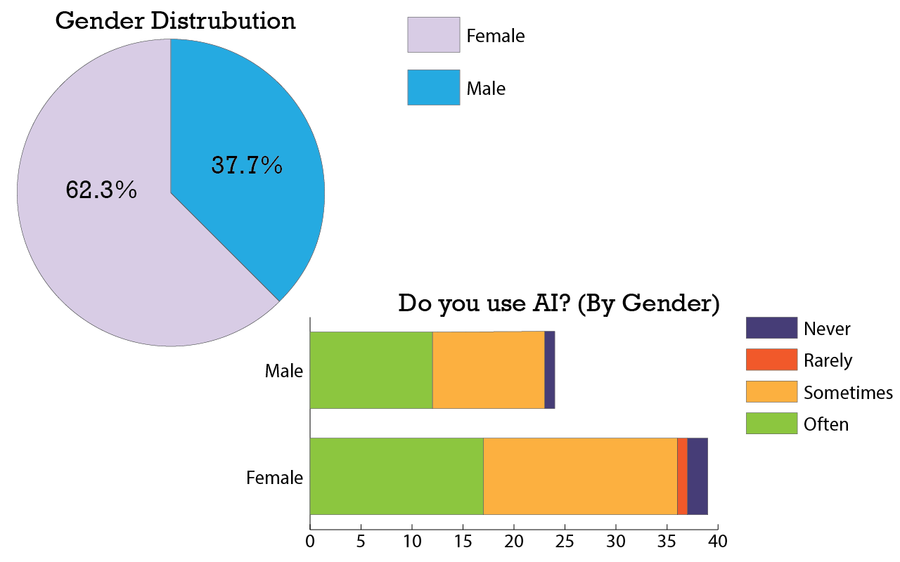

For this assignment, I used data I collected from my research study conducted in my PYSCH 250 class. I had 61 total responses and used the demographic data to create these charts. I was interested in looking at the AI use of my participants by gender. For future research, I think it would be interesting to see what participants use AI for and to see any indicators of emotional reliance on AI.
